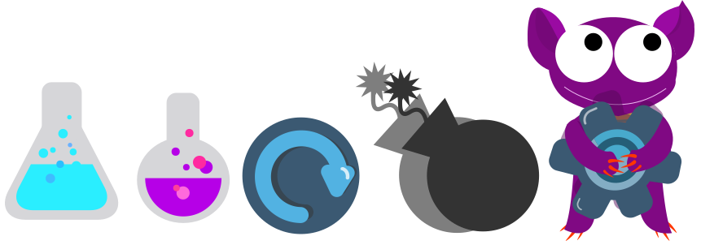
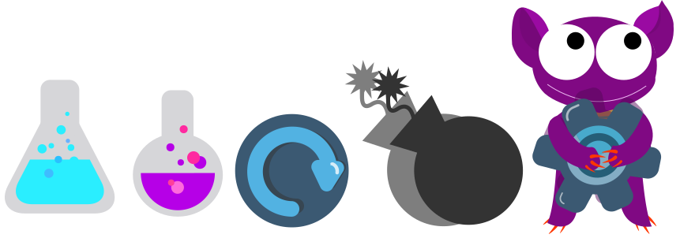

Grundlæggende Animation
På dette tema var formålet at dykke ned i Javascript og gøre brugerens oplevelse mere spændende via animation. Temaet bød på forskellige animationsteknikker, både fra et visuelt og et teknisk implementations synspunkt. Redskaber som blev tillært på dette tema omhandlede baggrundsdesign, karakterdesign, figuranimation, grafik til spil, interaktiv storytelling, javascript programmering (starte, stoppe og manipluere animationer) samt at sammenkæde flere animationer i interaktive sekvenser.
Mit animationsspil
Mti spil har til formål at huske og lære farver. Dette bliver pånået ved at man husker de rigtige farve kolber i den rigtige rækkefølge. Måden spillet blev opbygget på skete ved at lave et aktivitetsdiagram og et statemachinediagram. Disse har til formål at skabe overblik i forhold til koden i javascript. MEN.. først design.
 

Formgivning
Inspirationen til mit spil kommer fra en tegneserie tegner der hedder Christopher Hart og stilen Flat design. Dette ses ved de overdrevne lemmer i karakterdesignet og farverne hvor der ikke er brugt outline eller rent og hvidt. Hele spillets formgivning tager udgangspunkt i geometriske former. Alle karaktere og UI elementer blev tegnet i Illustrator, hvilket gav anledning til nye muligheder og at kende et nyt filformat SVG.